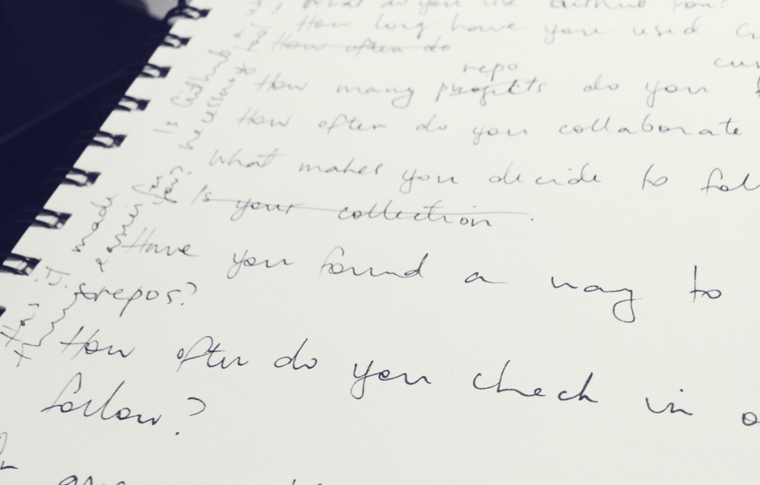
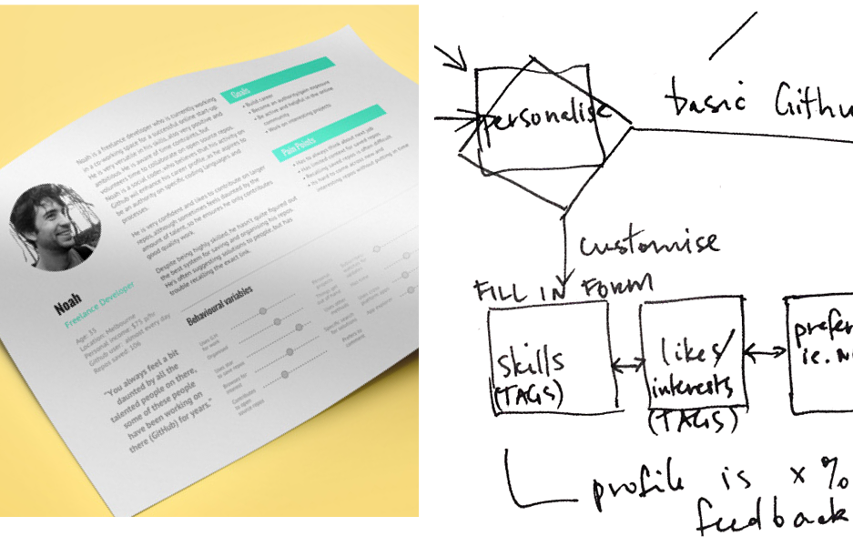
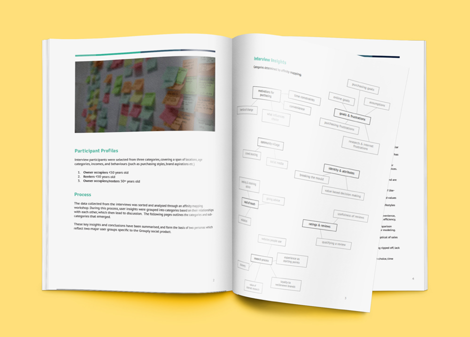
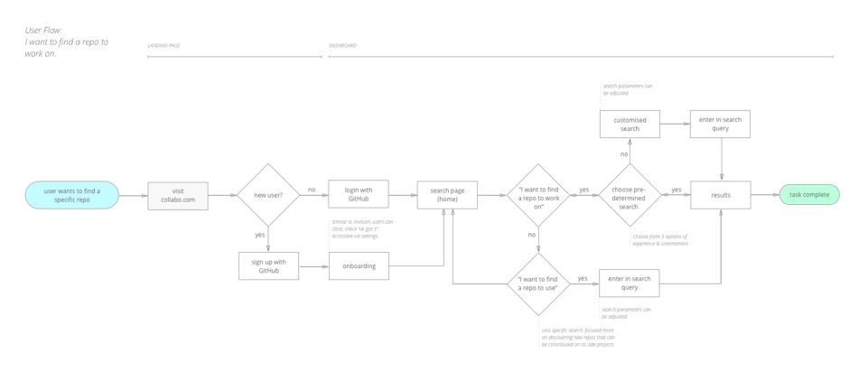
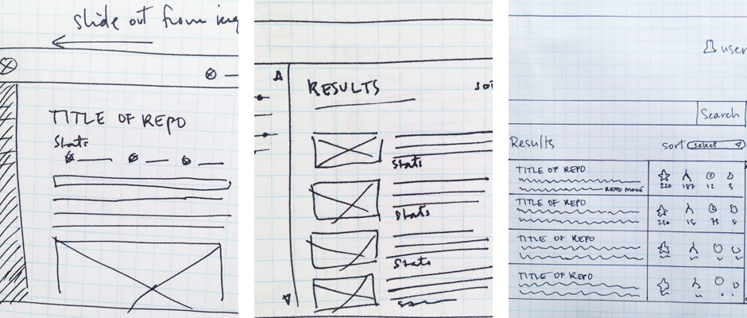
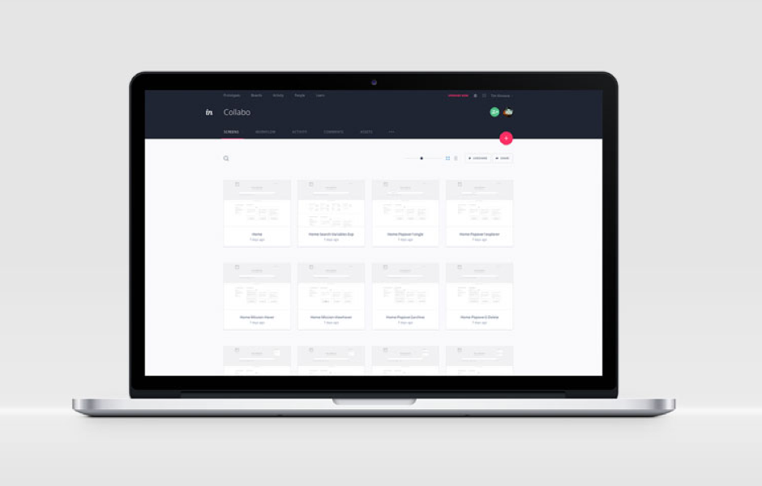
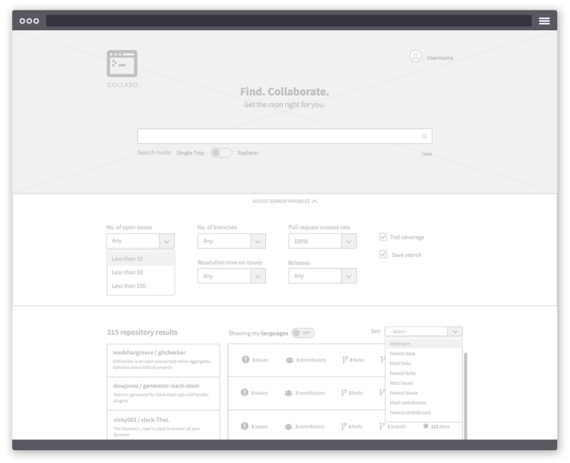
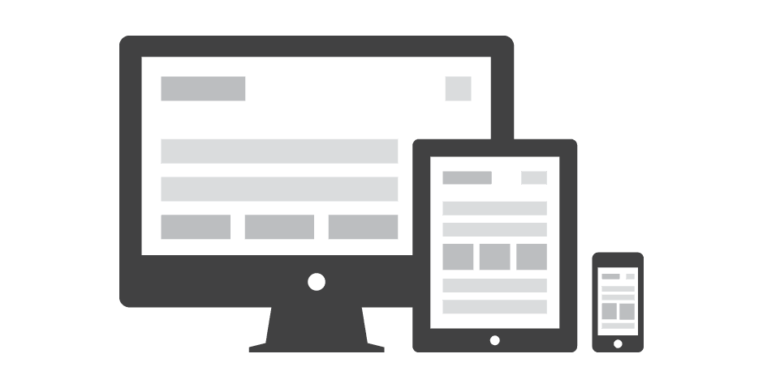

UX process
DESIGN THINKING METHODOLOGY
Design thinking helps to solve business challenges by better understanding users’ needs in order to design products that they actually want to use. By following these five steps, we can effectively understand and define the problem, discover opportunities, explore many possible solutions, and build the right product through testing and reiterating the design.
Empathise
Understand the end user through observation, interaction and immersing yourself in their experiences.
Define
Analyse the insights from the empathy work to address the user’s needs in your design.
Ideate
Explore many possible solutions by thinking big and working with others.
Prototype
Transform an idea into interactive mockups to experience it, learn from it, and develop more empathy for the user.
Test
Evaluate the product by observing how users interact with the prototype. Learn, reiterate, repeat.
RESEARCH & STRATEGY
A project starts by understanding the business needs through stakeholder interviews. I then define the research goals and plan user interviews, before heading out into the world with active listening skills to gather qualitative data. These key insights are used along with metric data and competitor analysis to make informed decisions about potential solutions.
Interview script notes
DOCUMENTATION
Communicating the pain-points and goals of the users with stakeholders and the team is essential. Delivering precise and accurate documentation visualises the journey, research outcomes, information architecture and process flows, which allows complex problems to be understood and solutions to materialise.
Persona, User Flow sketch
User Research Report
User Flow Diagram
SKETCHING & WIREFRAMES
Designing starts with pen and paper. I usually fill pages of my sketchbook with notes and wireframe sketches, working through the problems until I’ve arrived at the best solution. Even better is when this can be done with teams through co-creation workshops.
Wireframe sketches
PROTOTYPING & USABILITY TESTING
Beginning a cycle of design iterations, the “solution” is transformed into prototypes - ideally starting with a simple paper version, and increasing fidelity until it becomes a working, interactive mockup using Sketch or Photoshop with software like InVision or Axure. Through usability testing I can observe how users interact with the prototype, note what works and what doesn’t, and reiterate the design as necessary, always bearing in mind the initial problem statement.
Invision prototype
Prototype screen
BUILD
Testing with a prototype saves money and time. When the interactions are resolved and making sense, the project moves into visual design. I use Sketch or Photoshop to create beautiful user interfaces that are responsive, engaging, and satisfy user needs and business objectives.
